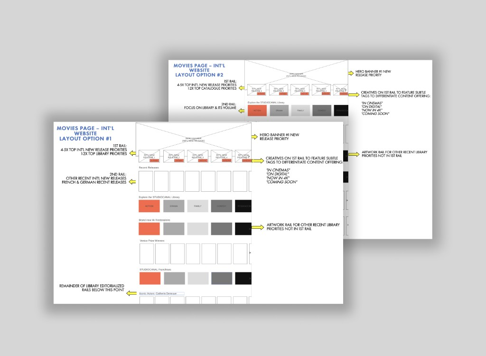

4 minute read
Building a global digital home for one of the world’s largest film libraries

STUDIOCANAL is one of Europe’s leading film and television studios, financing, producing, and distributing hundreds of films and series while managing one of the world’s largest film libraries. Yet despite its global footprint, the company lacked a unified international digital presence.
The project emerged from a business challenge that extended far beyond visual design:
How do you create a single digital platform capable of representing a global entertainment brand while serving the diverse needs of distributors, media, talent, and internal marketing teams across multiple international markets?
What began as a website redesign quickly evolved into a broader exercise in information architecture, stakeholder alignment, content strategy, and platform governance.
The context & key questions
Over the years, STUDIOCANAL’s digital presence had evolved into a fragmented ecosystem of regional websites, inconsistent experiences, and disconnected content structures.
At the same time, the business was experiencing significant international growth and increasingly needed a centralized platform capable of supporting:
- global brand positioning
- distributor communications
- media relations
- talent engagement
- content discovery
- international marketing initiatives
Several strategic questions guided the project:
- How should a modern entertainment studio present itself digitally?
- How can a single platform serve multiple stakeholder groups with different goals?
- How can content be structured to showcase both the breadth and quality of STUDIOCANAL’s catalogue?
- How can marketing teams retain flexibility without compromising consistency?
The problem
Although STUDIOCANAL possessed one of the industry’s most valuable content catalogues, there was no cohesive digital experience reflecting the scale of the organization.
The existing ecosystem created several challenges:
- fragmented regional experiences
- inconsistent brand presentation
- limited content discoverability
- inefficient publishing workflows
- lack of a centralized communication platform
Internally, marketing and publicity teams also lacked the flexibility needed to support evolving business priorities and international campaigns.
The challenge became:
How might we create a premium, scalable digital platform that showcases STUDIOCANAL’s world-class catalogue while empowering international teams to communicate effectively with distributors, media, and industry stakeholders?
Research & discovery
The project began with a comprehensive discovery phase focused on understanding both user needs and business objectives. Stakeholder workshops and interviews helped uncover the requirements of:
- international marketing teams
- publicity teams
- content teams
- distributors
- media stakeholders
This process revealed that an earlier website prototype had not adequately addressed many of the operational requirements of the teams responsible for maintaining and leveraging the platform. Alongside stakeholder discovery, I conducted:
- competitive benchmarking of entertainment and media platforms
- content audits and inventory analysis
- information architecture reviews
- user journey mapping
One insight quickly emerged:
Insight: The website needed to function as both a premium showcase and a business tool.
Success would depend not only on presenting content effectively, but also on enabling internal teams to communicate strategically and adapt the platform to changing business needs.
Product thinking & design decisions
The project ultimately became an exercise in balancing content discovery, business flexibility, and brand storytelling.
Reframing the platform around user goals
Rather than organizing the experience around internal company structures, the information architecture was redesigned around the needs and expectations of key audiences. This required rethinking:
- navigation structure
- content hierarchy
- discovery pathways
- content relationships
The goal was to reduce friction and align the experience with users’ existing mental models of modern entertainment platforms.
Designing a content-first experience
Research and benchmarking highlighted the importance of allowing content to lead the experience. The redesigned platform adopted a more curated, visually-driven approach that emphasized:
- film and television titles
- talent
- catalogue depth
- editorial storytelling
This shifted the focus away from corporate information and toward the creative assets that define the brand.
Building flexibility into the system
A critical business requirement was ensuring that international marketing teams could evolve and customize communications without requiring major platform changes.
This led to a more modular content structure that allowed teams to:
- support campaign launches
- highlight priority content
- publish updates efficiently
- adapt communications to changing business needs
The platform needed to scale alongside the organization.

Iteration & implementation
By the time I joined the project, an earlier prototype already existed. Rather than starting from scratch, the process focused on identifying gaps, refining requirements, and evolving the solution. The revised approach included:
- a redefined information architecture
- a simplified global navigation system
- improved content organization
- enhanced stakeholder alignment
- a new WordPress-based implementation
As development progressed, additional complexity emerged due to integrations with external databases and content systems. These technical constraints introduced new challenges around:
- content synchronization
- metadata structures
- scalability
- international deployment
Working through these dependencies became a key part of delivering a viable minimum product.
Results & reflection
- Integrated films
- 6k+
- integrated films
- Monthly visitors at launch
- 18k
- monthly visitors at launch
- Localized versions
- 5
- localized versions
The platform launched successfully in 2021 and was subsequently localized across key territories including: United Kingdom, France, Germany, Australia, and New Zealand.
The project transformed STUDIOCANAL’s digital presence from a fragmented collection of regional websites into a unified global platform capable of supporting both brand storytelling and business objectives.
Most importantly, the website provided the organization with a premium showcase worthy of its catalogue and international reputation.
Reflection
One of the most valuable lessons from this project was recognizing that successful digital experiences are often less about interface design and more about organizational alignment.
The most important design decisions emerged from:
- understanding stakeholder needs
- defining content strategy
- structuring information effectively
- creating systems that could scale
The project reinforced a principle that continues to shape my work today:
Strong digital products rarely succeed because of visuals alone. They succeed when user needs, business goals, content strategy, and operational realities are aligned within a cohesive system.